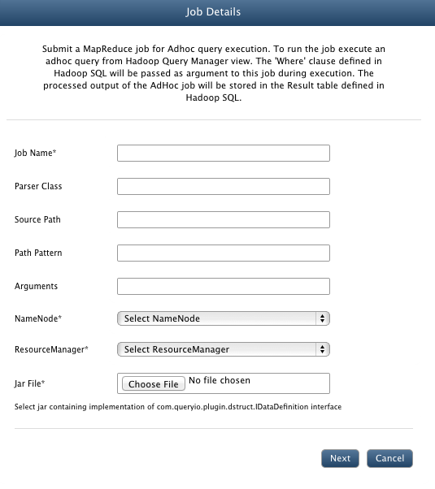
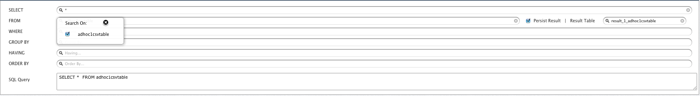
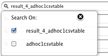

AdHoc - Content Processor
In this chapter
This chapter explains about AdHoc content processing and how to use it.
What is AdHoc - Content Processor
QueryIO provides AdHoc query feature. AdHoc query allows you to execute MapReduce jobs through analytics query manager and store parsed data in result table.
For ad hoc querying, no filter expressions are provided when job is added.
Instead filter expressions are provided using query builder's WHERE block.
When a query is fired on these tables, respective mapreduce job is executed and result is displayed.
You can also write your own MapReduce Jobs for different file types that you want to analyze.
To see how you can write your own Job, refer to the developer documentation.
CSV MapReduce Job with AdHoc Support
Following are the steps for CSV MapReduce job:
- Before any mapreduce job is added, there will be only no adhoc table [AdHocDB] in the QueryManager.
- Now go to Data > Manage Datasources > Manage Content Processor and click Add.
- In the Job Name textbox, enter CSVParser.
- In the Parser Class textbox, enter the main class name for your parser. For demo CSV parser, enter com.queryio.demo.adhoc.csv.CSVParserJob.
- In the Source Path textbox, you can specify the path from where files will be parsed.
- In the Path Pattern textbox, specify file filter pattern.(For example : *.csv or /Data/*.csv)
- In the Arguments textbox, provide any extra arguments required by your parser. For sample job, provide /.
- Filter expressions can be applied using WHERE block of query designer.
- Select NameNode and ResourceManager to be linked with job.
- Select $INSTALL_HOME/demo/CSVAdHocJob.jar file.
- For CSV parser job, we do not need to add any dependency libraries or native files.
- Click Save.

- Go to Analytics > Query Designer
- There will be a new ADHOC-CSVPARSERJOB table added in the FROM section.

- Result Table : If persisted, it displays name of the table in which result of the job execution will be saved in database. It can be manually changed.
- To provide filter expressions, use WHERE block. Select the attribute to be filtered and specify expression value through UI.
- Click "View" to execute query.
- Job will be automatically executed and result is displayed accordingly.
- Once the query has executed, <Result Table> will be added to your FROM list and can be used further for querying.

Copyright © 2015 QueryIO Corporation. All Rights Reserved.
QueryIO, "Big Data Intelligence" and the QueryIO Logo are trademarks
of QueryIO Corporation. Apache, Hadoop and HDFS are trademarks of The Apache Software Foundation.